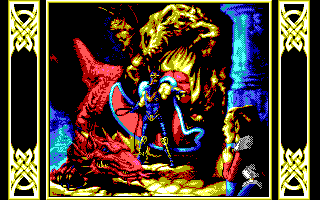
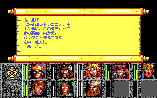
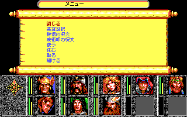
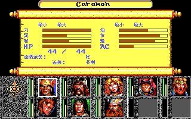

どんなゲーム？
ドラゴンズ・オブ・フレイムは、1989年に SSI から発売された AD&D「ドラゴンランス」のアクション RPG です（開発は U.S. Gold）。小説『ドラゴンランス戦記』の物語のうち、槍の仲間がクォリネスティを経て、要塞パックス・タルカスへ向かうところを描いています。
ドラコニアンの大軍に追われながら南へ進み、スラ・モリの洞窟を抜けて要塞に忍び込み、囚われた人々を救い出します。先頭の一人を操って戦い、倒れたら次の仲間と入れ替えながら進みます。
Dragons of Flame
Steam 版「Silver Box Classics」に入っている「Dragons of Flame」を日本語で遊べるようにする、非公式のファンメイドパッチです。 巻物の枠に出る物語や会話、メッセージ、メニュー、呪文と持ち物の名前、能力値の画面までを日本語にしています。 ゲームの DOSBOX フォルダにファイルを 1 つ置くだけで日本語になり、消せば英語に戻ります。
ドラゴンズ・オブ・フレイムは、1989年に SSI から発売された AD&D「ドラゴンランス」のアクション RPG です（開発は U.S. Gold）。小説『ドラゴンランス戦記』の物語のうち、槍の仲間がクォリネスティを経て、要塞パックス・タルカスへ向かうところを描いています。
ドラコニアンの大軍に追われながら南へ進み、スラ・モリの洞窟を抜けて要塞に忍び込み、囚われた人々を救い出します。先頭の一人を操って戦い、倒れたら次の仲間と入れ替えながら進みます。




DragonsOfFlame_JP.zip を展開します。winmm.dll を、ゲームの DOSBOX フォルダ（DOSBox.exe があるフォルダ）にコピーします。games\Dragons Of Flame\DOSBOX に進みます。GOG 版の DOSBox（0.74-2.1）にも合わせてあります。GOG 版でも、ゲームを入れたフォルダの中の DOSBOX フォルダに winmm.dll を置いてください（GOG 版での動作はまだ確かめていません）。
ゲームのファイルは書き換えません。日本語にしたデータは、起動時に %LOCALAPPDATA%\DFLAME_JP フォルダに自動で作られます。
DOSBOX フォルダの winmm.dll を消すと英語に戻ります。%LOCALAPPDATA%\DFLAME_JP フォルダも消してかまいません。セーブデータはそのまま使えます。誤訳や不自然な訳に気づいたら、GitHub の Issues で教えてください。